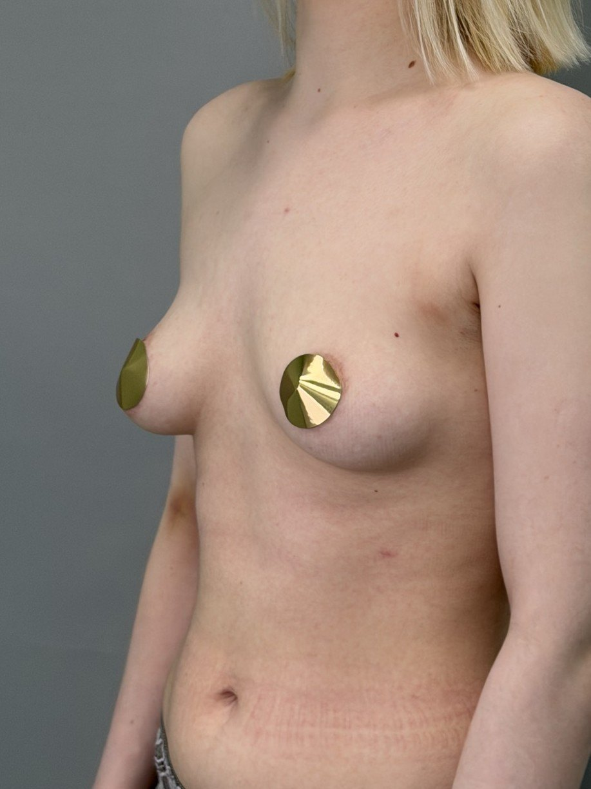
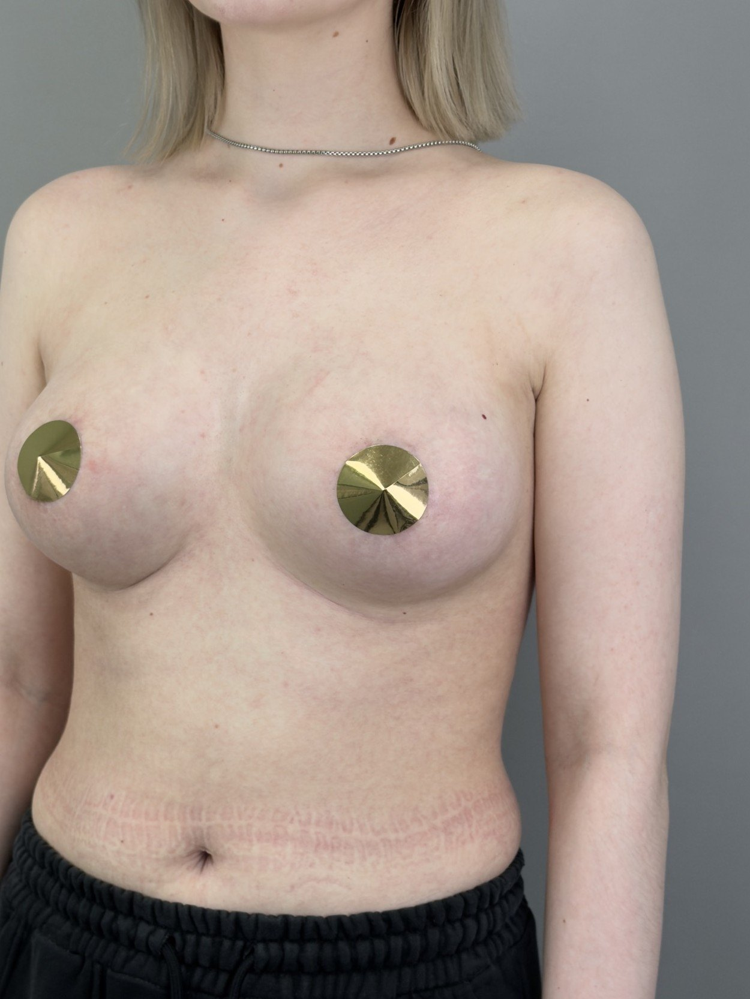

с чем пришла
«Хочу большой объём,
чтобы точно было видно».
что увидел Филипп
Узкое основание, тонкая кожа, небольшая асимметрия. Запрошенный объём ткани не удержат, со временем даст опущение.
что обсуждали на консультации
Объём, который держат
собственные ткани
Через год это выглядит своим, а не оперированным.
Если анатомия и объём собственных тканей позволяют, верхний полюс удаётся наполнить без импланта.
«Моя задача, не выполнить пожелание буквально, а сделать так, чтобы результат жил с человеком годами».
что сделали
Анатомические импланты умеренного профиля, доступ под грудной складкой, коррекция асимметрии основания.
через 8 месяцев
Форма стабильна, симметрия восстановлена, пациентка вернулась к тренировкам через 2 месяца.

до

результат
8 месяцев